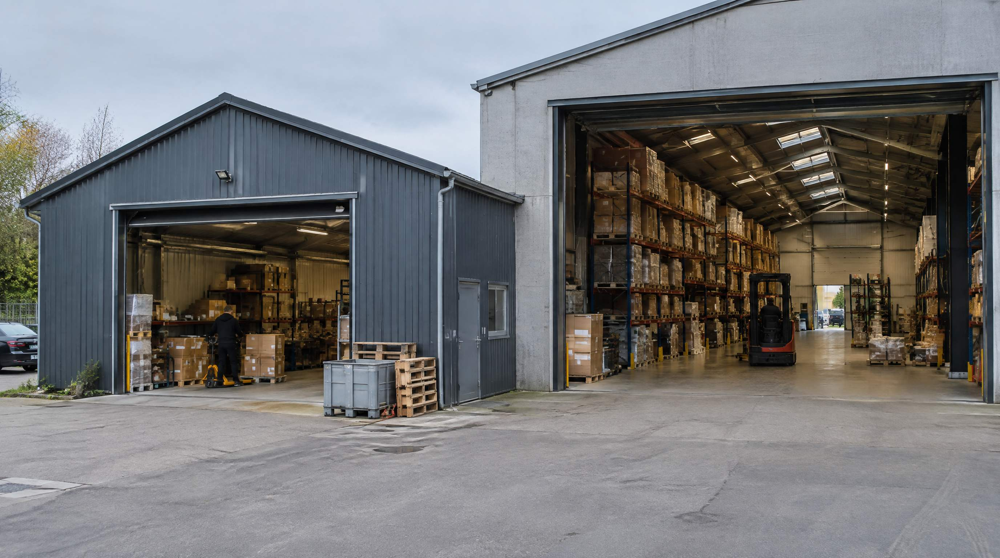

Spørgsmålet er ikke om 3PL er bedre end eget lager. Det er hvad jeres nuværende proces koster, og om I kan købe den billigere ude.
De fleste artikler om emnet giver dig en ordregrænse: under så og så mange ordrer om dagen skal du outsource, over den skal du beholde det selv. Den grænse findes ikke. Vi har kunder med 200 ordrer om måneden der regner positivt hjem på deres eget lager, og vi har set lagre med tusind ordrer om dagen der ville have været bedre tjent med en partner.
Det der afgør det er fire ting: hvad en ordre koster jer i dag, hvor meget volumen svinger, om logistikken er en del af jeres produkt, og om I har nogen til at drive et lager.
Hvad er 3PL?
3PL, third party logistics, er når en ekstern partner modtager, opbevarer, plukker, pakker og sender jeres varer. I betaler typisk per ordre, per palle på lager og per retur, i stedet for husleje, løn og udstyr.
Den grundlæggende forskel er ikke prisen. Det er at faste omkostninger bliver variable. Står lageret stille i februar, betaler I stadig huslejen på jeres eget lager. Hos en 3PL betaler I for det der sendes.
👉 Er I vokset fra jeres nuværende setup? Lad os kigge på det sammen
Regn jeres egen pris ud først
Uden det tal kan I ikke vurdere et eneste 3PL-tilbud. Og det er svært at få rigtigt, fordi de fleste glemmer halvdelen af omkostningen.
En lagermedarbejder koster omkring 300 kr. i timen, alt medregnet. Det er ikke det tal der står på lønsedlen, men hvad timen koster jer. Regn med cirka 1.600 produktive timer om året, og I er på rundt regnet 480.000 kr. pr. årsværk.
Kilde: DA StrukturStatistik 2025, tabel 2.1. For gruppen "andet manuelt arbejde", som dækker lager- og pakkearbejde, er de samlede medarbejderomkostninger 300,69 kr. pr. præsteret time, hvoraf den direkte løn er 187,72 kr. Resten er feriepenge og SH, arbejdsgiverpension, fritvalg, løn under sygdom og genetillæg.
Og så den del alle glemmer: kontorets andel. Indtastning af følgesedler, afstemning af leverandørfakturaer, opfølgning på fejlordrer. Det er lagerarbejde, det ligger bare ikke på lageret. Uden den post ser manuel drift kunstigt billig ud, og så sammenligner I en halv omkostning med en hel.
Læg husleje, udstyr og systemer oveni, divider med antal sendte pakker, og I har jeres pris pr. ordre. Sådan regner du cost per ordre går den igennem trin for trin.
Det eneste tal vi selv kan dokumentere
SmartPack drev sin egen webshop på papir indtil 2019, med omkring 100.000 ordrer om året. Før: 7,5 årsværk på lageret plus cirka 1,5 årsværk på kontoret der holdt lagerprocessen kørende. Ni i alt, cirka 3,1 mio. kr. om året, altså omkring 31 kr. pr. ordre.
Efter: 2,5 årsværk i alt, cirka 0,9 mio. kr. om året, omkring 9 kr. pr. ordre. Processerne før og efter er sammenlignelige.
Kilde: SmartPacks eget lager, dokumenterbart via historiske løn- og ansættelsesdata. Det er ét lager og én forretning, ikke et løfte om hvad I kan opnå.
Hvorfor 3PL-priser er svære at sammenligne
Et 3PL-tilbud kommer sjældent som ét tal. Det kommer som en liste, og de poster der ikke står øverst er dem der flytter regningen:
- Modtagelse per kasse eller palle der kommer ind
- Opbevaring per palleplads per uge, også de uger hvor der ikke sker noget
- Pluk og pak per ordre, ofte med tillæg per ekstra ordrelinje
- Retur per stk., og det er typisk den dyreste linje på hele listen
- Minimumsvolumen, altså et gulv I betaler uanset hvad I faktisk sender
- Opsætning som engangsbeløb for integrationen
- Tillæg for pakkesæt, branded emballage, tunge varer og alt andet der ikke er en standardkasse
Bed altid om et tilbud regnet på jeres faktiske ordremix fra sidste år, ikke på en gennemsnitsordre. Og bed om tre tilbud. Spredningen mellem danske 3PL'er på den samme ordremix er større end de fleste regner med.
Når 3PL er det rigtige
- Volumen svinger voldsomt. Har I fire travle måneder og otte stille, betaler I for tom kapacitet resten af året på eget lager. En partner absorberer udsvinget.
- I skal teste et nyt marked. Et lager i et land I ikke ved om I bliver i, er dyr læring.
- Kapitalen skal bruges et bedre sted. Lejekontrakt, reoler, terminaler og folk er penge der ikke går til varer eller markedsføring.
- Der er ingen til at drive det. Et lager uden en der ejer det bliver ikke bedre af et system. Har I ingen lagerchef og skal I ikke have en, er en partner et ærligt valg.
Når eget lager er det rigtige
- Pakken er en del af produktet. Skal der lægges noget i, pakkes på en bestemt måde eller mærkes op, bliver det et tillæg hos en partner, og det bliver aldrig helt som I ville have gjort det.
- Returnering er en stor del af forretningen. Returmodtagelse er dyr hos de fleste 3PL'er, og vurderingen af varens stand er svær at lægge ud af huset.
- I vil kunne se hvad der sker. Hos en partner får I den data de vælger at dele. På eget lager kan I måle alt og forbedre det I måler.
- Sortimentet er besværligt. Batch- og serienumre, holdbarhed, temperatur eller farligt gods koster tillæg hos en partner og kræver at de kan det.
Det tredje svar: begge dele
Det bliver tit stillet op som enten-eller, men den mest almindelige model hos voksende webshops er en blanding. Eget lager til hjemmemarkedet, hvor I har styr på det og volumen er stabilt. En partner til de markeder I er ved at åbne, eller som overløb i de uger hvor jeres eget lager er fyldt op.
Det koster koordinering og to steder at holde styr på beholdningen. Til gengæld betaler I ikke for kapacitet I bruger fire uger om året.
Hvis I bliver på eget lager
Så er spørgsmålet ikke om I skal outsource, men hvad jeres nuværende proces koster. På lagre uden scanning ser vi typisk en fejlrate på 2,4 til 4,2 procent. En pakkefejl koster 300 til 590 kr. i hårde omkostninger: kundeservice, ny forsendelse, håndtering, og enten returfragt eller den vare der må afskrives.
Ved 200 ordrer om dagen er det fem til otte forkerte ordrer hver dag, og rundt regnet 375.000 til 1,2 mio. kr. om året ved 250 arbejdsdage.
Kilde: Fejlraten er SmartPacks egne observationer fra kundelagre uden scanning. Omkostningen pr. pakkefejl er fra E-logistik Guide 2026, udgivet af Dansk Erhverv i samarbejde med SmartPack.
Det tal er værd at kende, uanset hvad I beslutter. Vælger I en partner, er det jeres forhandlingsgrundlag. Bliver I selv, er det jeres business case.
Sådan griber I det an
- Regn jeres fuldt ladede pris pr. ordre ud, kontorets andel inklusive.
- Hent tre 3PL-tilbud regnet på jeres faktiske ordremix fra sidste år.
- Læg alle gebyrerne oveni hvert tilbud, ikke kun pluk og pak.
- Spørg hver partner hvad de kan levere af data, og hvor hurtigt en retur er tilbage på hylden.
- Læs opsigelsen. Hvor lang tid tager det at komme ud, og hvad koster det at flytte varerne hjem igen.
Det sidste punkt er det folk springer over. En aftale I ikke kan komme ud af, er ikke en aftale, det er en afhængighed.
Ofte stillede spørgsmål
Hvornår er eget lager billigere end 3PL?
Der er ikke en ordregrænse hvor det skifter. Det afhænger af hvad jeres egen proces koster, hvor meget volumen svinger, og hvad der ligger ud over pluk og pak i 3PL-tilbuddet. Regn jeres egen pris pr. ordre ud og hold den op mod tre tilbud på jeres faktiske ordremix.
Hvad koster en 3PL i Danmark?
Det kan ikke besvares med ét tal, og tal du finder på nettet er sjældent sammenlignelige. Prisen afhænger af hvor mange linjer der er på en ordre, hvor mange varenumre I har, hvor tunge varerne er, hvor meget der returneres, og hvor længe varerne står. Bed om et tilbud regnet på jeres egne ordrer.
Kan vi bruge begge dele?
Ja, og mange gør. Eget lager til hjemmemarkedet og en partner til nye markeder eller som overløb i peak. Det kræver at beholdningen holdes samlet ét sted, ellers oversælger I.
Hvad er det dyreste ved en 3PL-aftale?
Returhåndtering og de gebyrer der ikke står øverst i tilbuddet: modtagelse per kasse, opbevaring per uge, minimumsvolumen og tillæg for alt der ikke er en standardkasse. Et tilbud der ser billigt ud på pluk og pak kan være dyrere samlet end jeres eget lager.
Hvad skal vi kræve af en 3PL-partner?
Integration til jeres webshop og økonomisystem, adgang til jeres egne tal og ikke bare en månedsrapport, en aftalt fejlrate og hvad der sker når den ikke holdes, og en opsigelse I kan leve med. Bed om at se et lager de driver i dag.